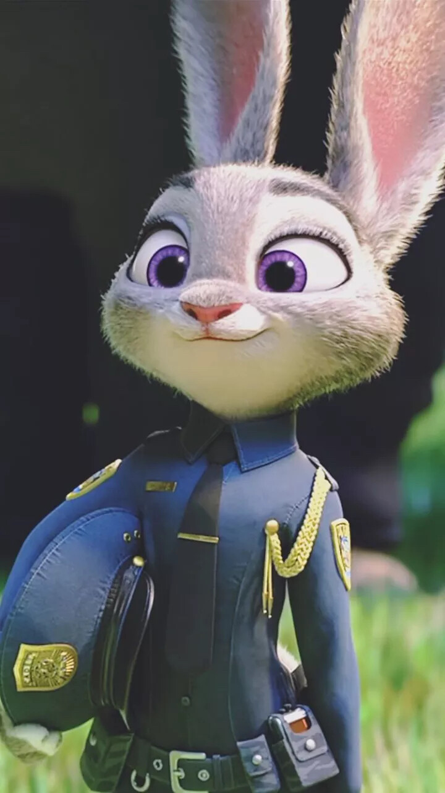
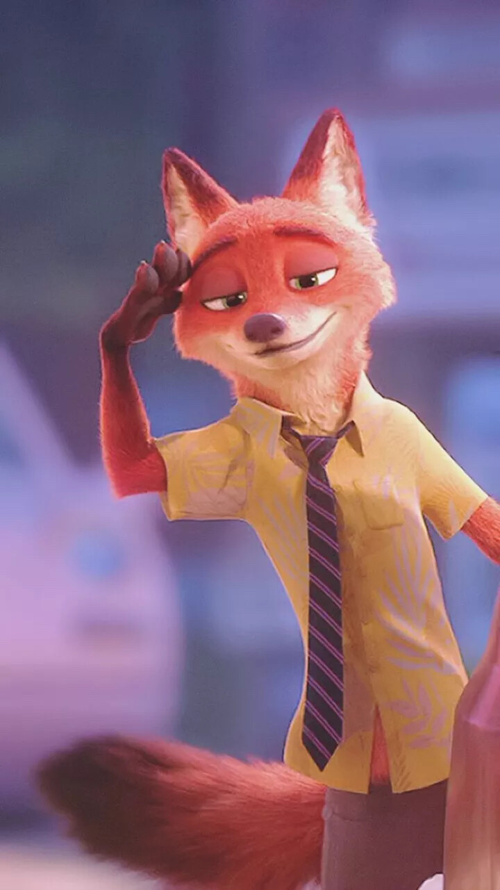
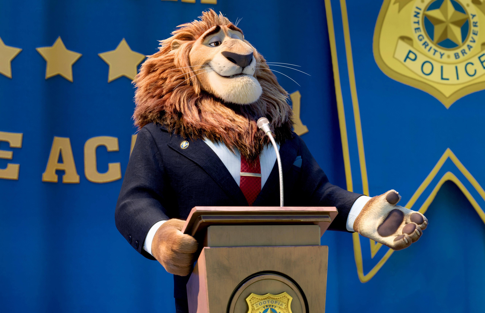
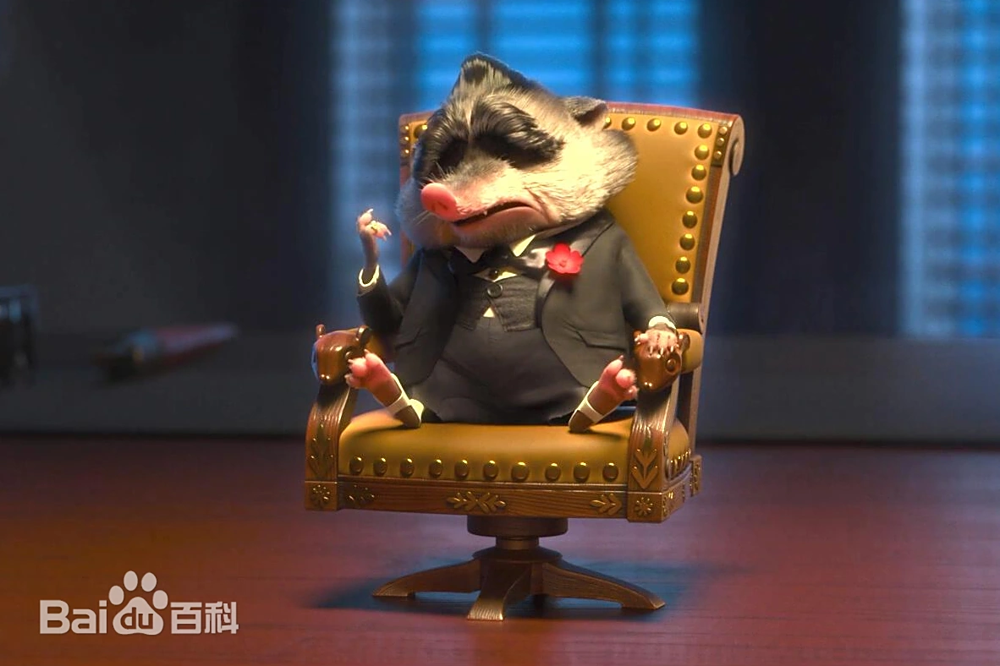

动物城警察局第一位兔子警官，充满理想主义的乐观主义者。尽管面临体型劣势和偏见，她凭借智慧和毅力证明小动物也能成就大事。

街头聪明的赤狐，最初以诈骗为生，后成为朱迪的搭档。表面玩世不恭实则重情重义，擅长利用人们对狐狸的刻板印象。

动物城的魅力领袖，致力于打造跨物种和谐共处的都市。因隐藏掠食者发狂事件被迫下台，展现了政治人物的复杂性。
表面温顺谦恭的副市长，实际策划了全城掠食者危机的幕后黑手。代表了被忽视群体的极端反抗方式。

北极鼩鼱黑帮教父，掌控着动物城地下世界。虽体型微小却气场强大，对家庭极度重视，恩怨分明。
动物车管所的树懒公务员，以极度缓慢的行动和说话速度闻名。下班后却能展现惊人飙车技术，制造强烈反差笑点。